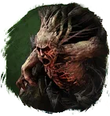
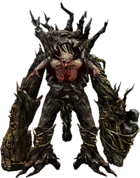
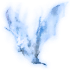
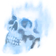
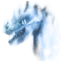

Открыть в интерактивной вики →

| Уровень | 30 |
|---|---|
| Прокачка | есть |
| Ранг в стае | 2 |
| Здоровье | 780 |
| Мана | 700 |
| Выносливость | 1300 |
| Статистика | Уровень: 30, ранг: 2, здоровье: 780, мана: 700, выносливость: 1300 |
Цена
70  Платина или Рецепт
Платина или Рецепт
Платина или РецептВыкуп
Выкуп за смерть:
2х
2х

5х
4х
Где взять
Покупается у Азарии  Азария
Азария
АзарияНавыки


Доп. информация
Требуемый уровень: 30
Призыв: Требуется Рецепт Адельвеига
Цена выкупа: 2 × Душа летучей мыши, 5 × Душа нежити, 4 × Душа рептилии, 10 империалов у Азарии в Деревне друидов.
Может получать опыт — ДА
Описание
 | Природа этого существа неясна: ни растение, ни зверь. Но это не мешает ему отважно поддерживать спутников в борьбе с любой опасностью. Атакует физически, издалека, ментально Использует: Боевой клич, Бросок валуна, Толстокожесть, Мощный удар, Обычная атака, Таран. | |